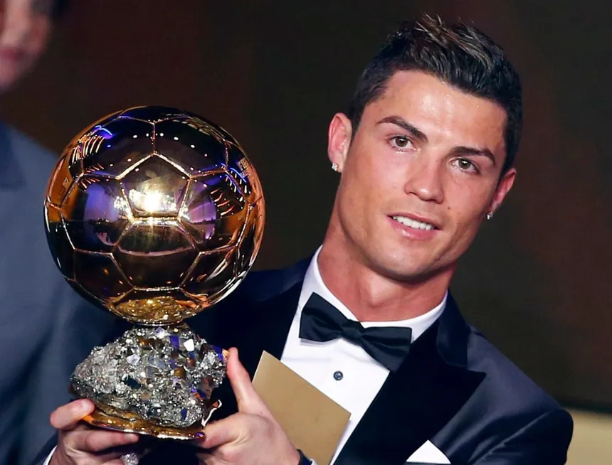

Cristiano Ronaldo dos Santos Aveiro

About Cristiano Ronaldo
- Cristiano Ronaldo was born on February 5, 1985, in Madeira, Portugal.
- He joined the Sporting Lisbon academy and made his professional debut at the age of 17, showcasing his exceptional skills as a winger.
- Ronaldo signed with Manchester United in 2003, where he flourished under Sir Alex Ferguson's guidance, winning three Premier League titles and a UEFA Champions League before his move to Real Madrid.
- In 2009, Ronaldo transferred to Real Madrid for a then-world-record fee. His time at the club was prolific, marked by numerous goals, individual awards, and four Champions League titles.
- After his successful stint in Spain, he returned to Manchester United in 2021, much to the delight of fans, showcasing his enduring talent.
- Ronaldo is Portugal's all-time leading goal scorer and has represented his country in multiple European Championships and World Cups, winning the UEFA European Championship in 2016.
- He's won multiple Ballon d'Or awards, given to the world's best player, and has consistently been at the forefront of discussions for his incredible skills and achievements.
- Known for his incredible speed, strength, and technical abilities, Ronaldo has played in various attacking positions and excelled in all of them.
- Beyond football, Ronaldo has made significant contributions to charitable causes, emphasizing his commitment to philanthropy.
- He's a global icon, both in the world of sports and in popular culture, with a massive fan following and a lasting legacy as one of the greatest footballers of all time.